Ten test problems with a known result (analytical solution or code-based calculation) and the example tours. Each has a procedure and a table of expected values.
FEA Studio.bat in the program folder.examples\user_tests in the installation (T1_…step to T10_…step); recreate with .venv\Scripts\python.exe -m examples.user_tests..venv\Scripts\python.exe -m verification.run_all. The output must end with VÝSLEDEK: všechny kontroly prošly (RESULT: all checks passed; the console is in Czech).Tip: FEA values differ from analytical ones by the mesh error; each value has a tolerance. Displacements within ~3 %, stresses away from singularities within ~5 %. Larger deviations are errors – send the .fea project and a description.
Steel beam 200 × 20 × 10 mm, fixed at one end, 100 N force at the other, perpendicular to the 10 mm height.
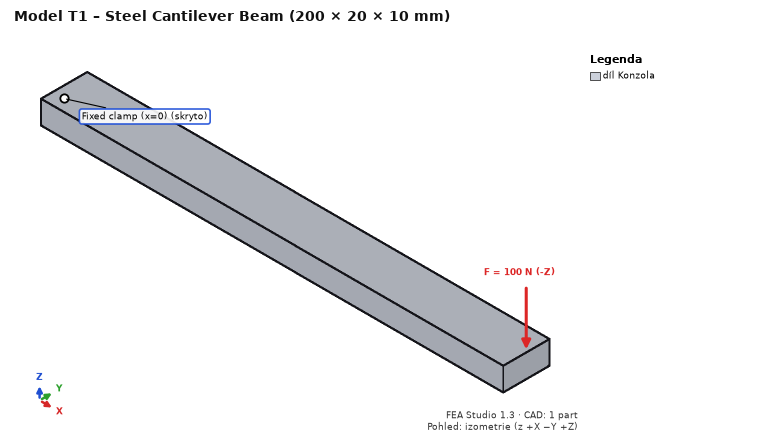
T1_cantilever.step.| Quantity | Expected value | Where to read |
|---|---|---|
| Tip deflection (displacement Z) | 0.763 mm (Timoshenko), FEA ~0.76 mm (±3 %) | Results → Displacement Z, summary |
| σx at mid-length, top / bottom face | +30 / −30 MPa (±5 %) | Stress σx, click at x = 100 |
| Reaction Fz at the support | 100 N | summary – reactions |
| Max. von Mises | at the support, marked as singularity (support edge) | Highest stresses |
Fatigue on the same model: Fatigue step → channel of the force case: sine, mean 0, amplitude 1, 1000 cycles per block, 100 blocks, signed von Mises, steel S-N: SD = 20 MPa, ND = 10⁶, k = 5, k2 = 0. At a node on the top face at x = 100: amplitude 30 MPa (±5 %), damage over 100 blocks ≈ 0.74, safety factor ≈ 1.06.
One eighth of a plate (width 100, thickness 5 mm, hole Ø10, tension 100 MPa): a 150 × 50 × 2.5 mm model with a quarter hole in the corner.
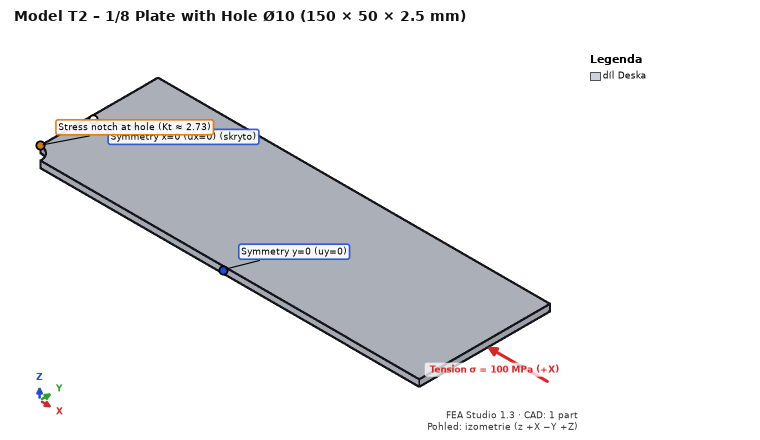
T2_plate_with_hole_eighth.step, Steel S235.| Quantity | Expected value | Where to read |
|---|---|---|
| σx max at the hole edge (x = 0, y = 5) | ≈ 303 MPa (Kt,n = 2.729 × 111.1 MPa, ±5 %) | Stress σx |
| Reaction Fx in the plane x = 0 | 12 500 N (100 MPa × 50 × 2.5) | summary – reactions |
| Classification of the maximum | real location (not a singularity) | Highest stresses |
Quarter of a ring, ri = 20, ro = 40 mm, height 10 mm.
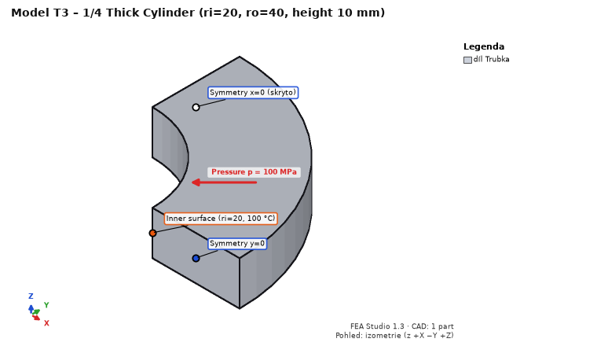
T3_pipe_quarter.step, Steel S235.| Quantity | Expected value |
|---|---|
| σθ (hoop) at ri / ro | 166.7 / 66.7 MPa (±5 %) |
| von Mises at ri | 233.3 MPa (±5 %) |
| Radial displacement of the inner face | 0.01873 mm (±3 %) |
Heat on the same model: Heat step → new steady-state case: inner face Temperature 100 °C, outer face (R 40) 20 °C. Results (case “Heat: …”), S235, λ = 53.3 W/(m·K):
| Quantity | Expected value |
|---|---|
| Temperature at r = 30 mm | 53.2 °C (logarithmic profile) |
| Heat flux |q| at r = 30 mm | ≈ 205 000 W/m² |
| Heat through the inner face | ≈ 96.6 W (boundary condition heat table), balance within 0.1 % |
Shaft Ø20 × 200 mm, fixed at x = 0, torque 100 N·m on the other end.
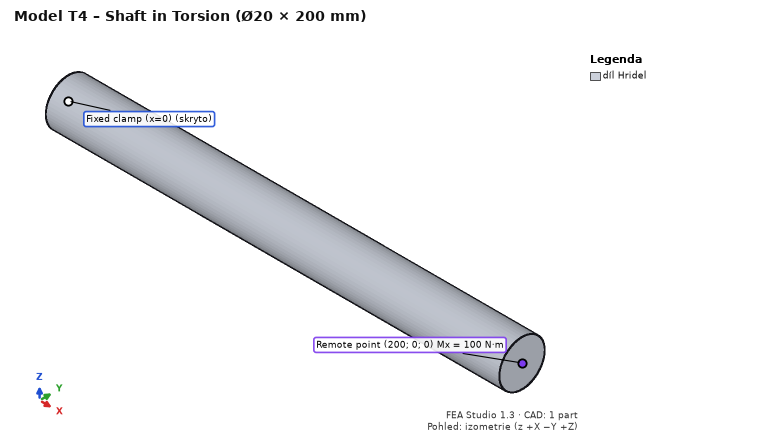
T4_shaft.step, Steel S235; fixed support on face x = 0.| Quantity | Expected value |
|---|---|
| Shear stress at the surface (τ = T/Wk) | 63.66 MPa; von Mises ≈ √3 · 63.66 = 110 MPa |
| Twist of the end | 0.903° (end circumference ≈ 0.158 mm) |
| Reaction moment at the support | 100,000 N·mm |
Two lap-jointed 10 mm plates, ISO 4017 M10 8.8 bolt with washers and nut (names from CAD).
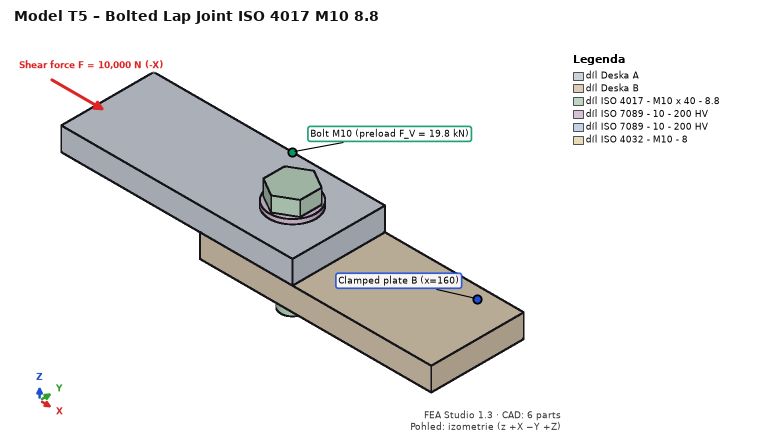
T5_joint_M10.step, plates Steel S235.| Quantity | Expected value | Where |
|---|---|---|
| Bolt preload case – bolt force | F_V = 19 760 N | Joints – utilization dock |
| VDI 2230 F_M,zul (μ_G = 0.12) | 29 603 N | bolt check |
| EN 1993-1-8 F_v,Rd (shear in thread) | 22 268 N | bolt check |
| EN 1993-1-8 F_b,Rd (bearing, e1 = e2 = 20) | 43 636 N | bolt check |
| Shear through interface + bolt | 10,000 N | joint forces |
Flange 10 mm, web 10 × 100 mm, two a5 fillet welds of length 100 mm (bodies “Svar …”).
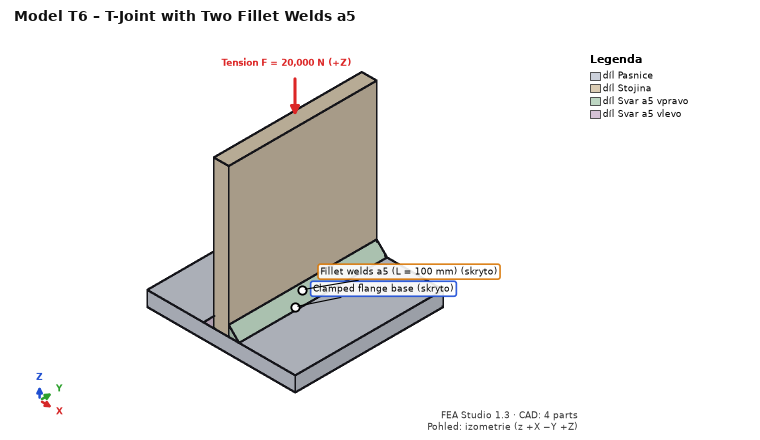
T6_t_joint_welds_a5.step, Steel S235. Joints → Detect joints… → confirm 2 welds.| Quantity | Expected value |
|---|---|
| Effective throat a / weld length from the mesh | 5.0 mm / 100 mm |
| Tension: sum of segment forces of both welds | 20,000 N |
| Longitudinal shear: mean τ∥ = F / (2·a·L) | 10 MPa |
Two 100 × 10 × 10 mm PLA bars: one printed upright (layers perpendicular to the length), the other lying flat.
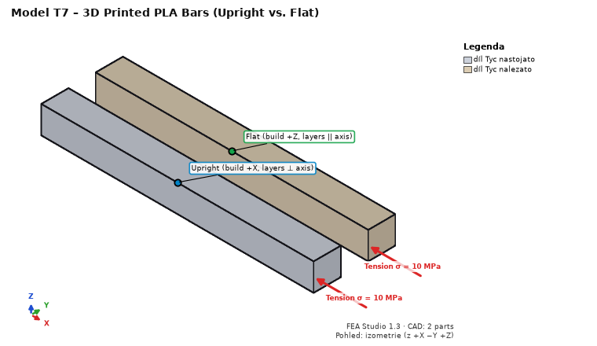
T7_printed_bars.step. Material of both parts Print PLA Bambu Basic.| Quantity | Expected value |
|---|---|
| Elongation of the upright bar (perpendicular to layers) | σL/E_z = 0.4630 mm |
| Elongation of the flat bar (in the layer plane) | σL/E_xy = 0.3731 mm |
| Safety factor (Tsai-Hill) | upright 3.50 (Rm_z/σ), flat 3.90 (Rm/σ) |
| Reaction Fx | 2,000 N |
Then turn on “shell + infill” (3 perimeters, infill 20 %): stiffness and safety both drop; the Shell / core section shows the solid shell share.
Steel beam 100 × 10 × 10 mm fixed at one end, harmonic force 100 N at the free end (verification Y2).
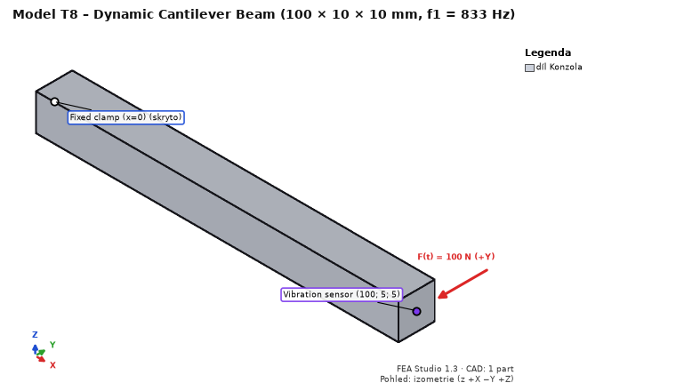
T8_cantilever_10x10x100.step, Steel S235.| Quantity | Expected value | Where to read |
|---|---|---|
| 1st and 2nd natural frequency (bending in y and z) | 833 Hz (Euler–Bernoulli 835.5 Hz, Timoshenko 0.3 % lower; ±1 %) | Dynamics – table of modes |
| Sum of effective masses of both modes in y | 61 % (E–B 61.3 %); a square section may split it between the two modes | table of modes |
| 3rd and 4th mode (2nd bending), 5th (torsion), 6th (axial) | ≈ 5,000 Hz (E–B 5,236 Hz), ≈ 7,390 Hz, ≈ 12,970 Hz | table of modes |
| Static tip deflection (Síla Y 100 N) | 0.190 mm (E–B FL³/3EI = 0.1905 mm) | Displacement Y, summary |
| Peak |uy| at the probe (resonance) | 4.62 mm = 24.2 × static (E–B 0.9707/(2ζ) = 24.27; ±2 %) | Dynamics – FRF plot, probe |
| |uy| at 10 Hz | 0.190 mm (quasi-static) | FRF plot |
With ζ = 1 % the peak doubles (resonance response ∝ 1/damping).
Two steel blocks 20 × 20 × 10 mm stacked, 10 MPa on the top face, frictionless contact (verification K1, “patch test”).
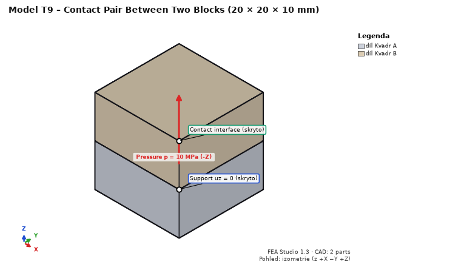
T9_contact_blocks.step, Steel S235.| Quantity | Expected value | Where to read |
|---|---|---|
| Contact – pressure | 10.0 MPa uniform (±0.5 %) | Contact – pressure |
| Normal force of the pair | 4,000 N (10 MPa × 400 mm²) | Contacts tab |
| Displacement of the top face | −0.000953 mm (2ph/E + p/K, K = 50·E) | Displacement Z |
| Contact – opening, status | 0 mm, whole face in contact | contact quantities |
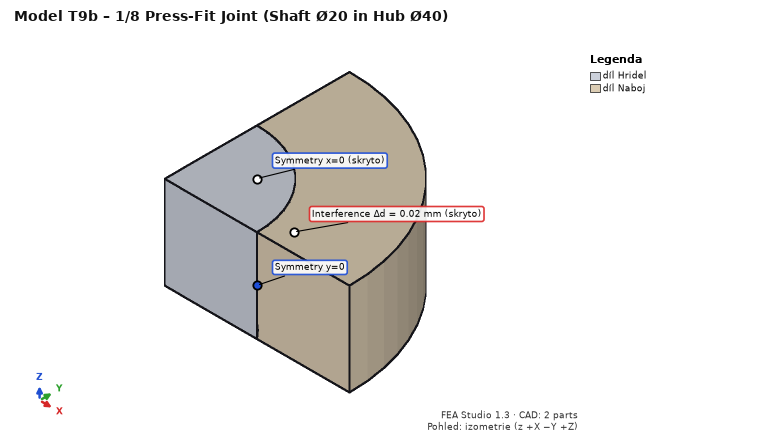
T9b – press fit (T9b_press_fit_eighth.step, K4): one eighth of a Ø20 shaft in a Ø20/40 hub, length 2 × 10 mm. Symmetry supports x = 0 → ux = 0, y = 0 → uy = 0, z = 0 → uz = 0. Empty load case “Lis”. Contacts: pair Hridel – Naboj, Interference (press fit), interference −0.01 mm (Δd = 0.02 mm). Mesh 1.25 mm (about 1 min). Expected (Lamé): contact pressure 78.75 MPa (FEA mean ~80 MPa), hub hoop stress at the bore 131.3 MPa, radial displacement of the hub bore +7.4 µm, of the shaft −2.6 µm.
Crank r = 20 mm, connecting rod l = 80 mm, piston; crank at 100 rad/s; 1,000 N on the piston against the X direction (verification MB1).
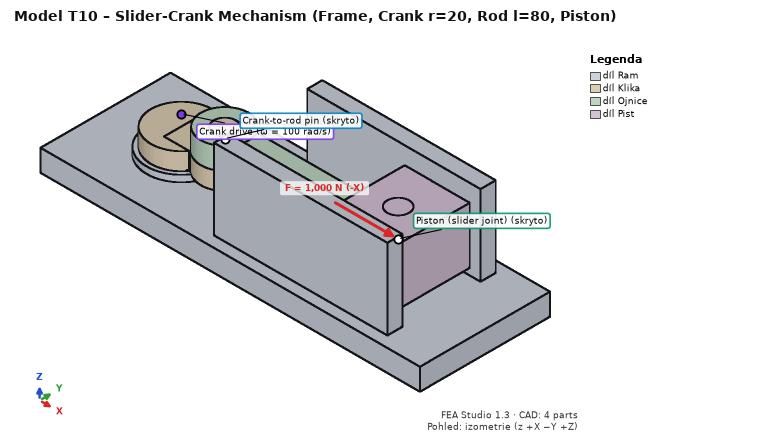
T10_crank_r20_l80.step, Steel S235 for all parts.| Quantity at t = 0.010472 s (crank at 60°) | Expected value |
|---|---|
| Piston position x (centre of mass = pin axis) | 88.102 mm (r·cos φ + √(l² − r²·sin² φ)) |
| Piston velocity vx | −1,953.8 mm/s |
| Piston acceleration ax | −75,022 mm/s² |
| Drive torque without inertia (set mass 0.001 kg and zero inertia manually) | |M| = F·|v|/ω = 19,538 N·mm |
| Drive torque with CAD mass (steel) | |M| ≈ 19,250 N·mm (inertia of rod and piston) |
| Body equilibrium, power balance | ≈ 0 (motion result summary) |
The sign of velocity and torque depends on the crank joint axis (+z = counter-clockwise seen from above). Then try Transfer to FEA… for the connecting rod (instant of maximum pin reaction), as in example 8.
python -m fea_core run study.json.Send the saved .fea project (Ctrl+S), the text of the Solver log dock (Ctrl+A, Ctrl+C), what you expected and what happened; for a crash also the command-line window contents, if open.